창호종합기계CHANGHO INC
104. 서보 탭핑기
055-327-4112
055-327-4112
Coolant Injection Type
탭 부하가 큰 소재에 자동 미스트로 급유합니다
ELECTRIC SERVO TAPPING MACHINE · COOLANT INJECTION TYPE · 6 MODELS
절삭 부하가 큰 소재에서는 탭이 열을 받습니다. 분사식(MO)은 가공하는 순간에 절삭유를 함께 분사해 마찰열을 낮추고 칩을 배출합니다. 나사산 면이 깨끗하게 형성되고 탭 수명이 길어집니다.
절삭유 분사식 6종M3 ~ M36오일 자동 공급작업반경 1,100 / 1,200 mm
모델 선정 · 견적 문의스마트스토어 바로가기
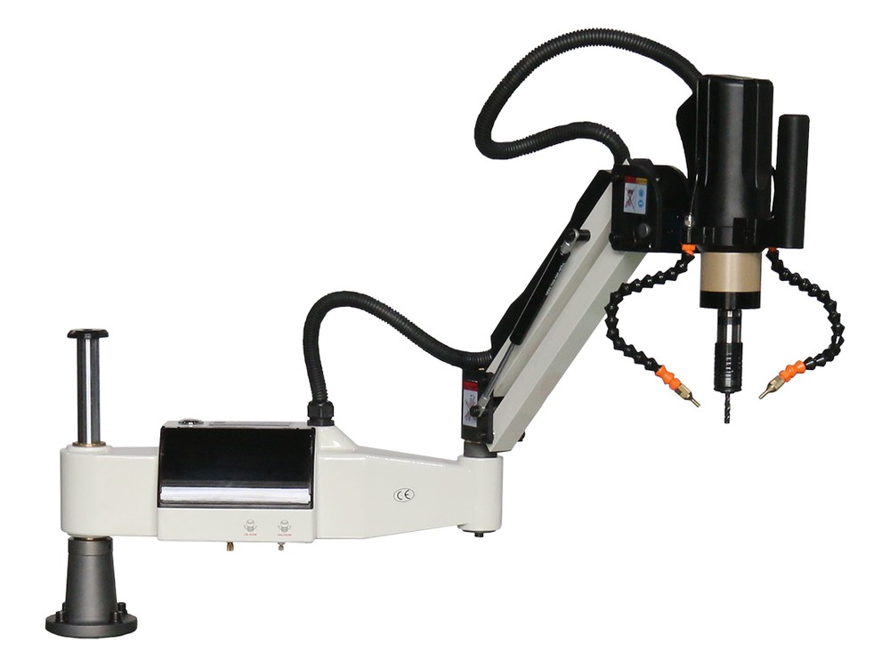
6종
분사식 라인업
M3–M36
탭 가공 범위
1,200mm
최대 작업 반경
자동
절삭유 공급
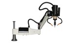
이 계열 6기종 — 아래에서 기종별 사양을 보실 수 있습니다
Video
제품 소개 영상
절삭유 분사식(MO) 서보 탭핑 머신 소개 영상 · 창호종합기계 유튜브
Selling Points
분사식이 해결하는 세 가지
일반형과 제어 구조는 같습니다. 달라지는 것은 탭이 받는 열과 칩, 그리고 그 결과로 나오는 나사산 면입니다.
01
마찰열을 가공 중에 낮춥니다절삭유가 탭과 소재가 맞물리는 지점에 직접 분사됩니다. 가공이 끝난 뒤 냉각하는 방식이 아니라 열이 생기는 자리에서 낮추므로, 연속 탭핑에서 온도가 누적되는 속도가 느려집니다.
02
나사산 면이 깨끗하게 형성됩니다윤활이 유지되면 칩이 나사산에서 밖으로 밀려 나옵니다. 면이 매끄럽게 나오고 체결 토크가 모든 홀에서 고르게 나옵니다.
03
탭 마모가 늦게 시작됩니다절삭 부하가 큰 소재를 건식으로 연속 가공하면 탭 마모가 빨라집니다. 분사식은 그 마모를 늦춥니다. 탭 교체 주기가 길어지는 만큼 소모품 비용과 교체 정지 시간이 함께 줄어듭니다.
Control
별도 쿨런트 설비 없이 본체 탱크로 급유합니다
별도 쿨런트 설비 없이 운용합니다. 본체에 오일 탱크가 내장되어 있고, 가공 신호에 맞춰 자동으로 분사됩니다. 대구경 구간을 연속 가공하실 때도 급유가 이어지며, 나머지 제어(터치스크린·3모드·무단 변속·지능형 토크 보호)는 일반형과 동일합니다. 저희가 출고 전에 실제 소재로 분사 상태를 확인한 뒤 보내 드립니다.
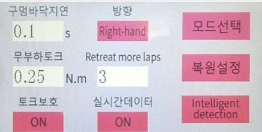
0.01mm
단위 깊이 제어
3
모드 · 수동/자동/연동
360°
회전 유니버설 헤드
2
겹 과부하 보호
Supply Journey
수입부터 사후 관리까지, 저희가 직접 합니다
중간 유통을 거치지 않습니다. 컨테이너로 직접 들여와 전시장에 세우고, 시연하고, 포장해 보내고, 고장 나면 받아서 고칩니다.
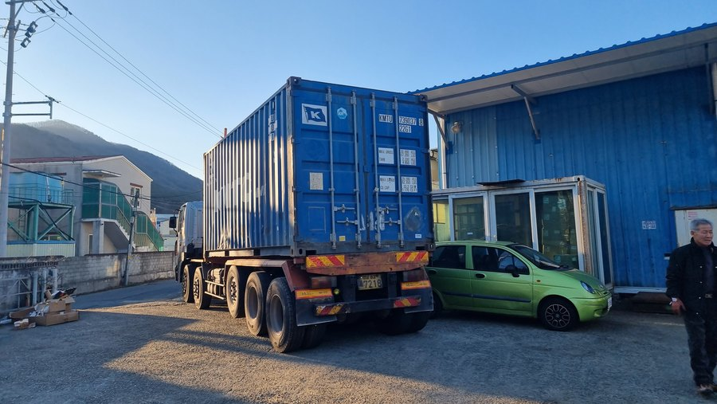
01
대량 수입
컨테이너 단위로 직수입합니다. 한두 대씩 들여오는 방식이 아니라 라인업 전체를 한 번에 확보하기 때문에 재고에서 출고됩니다.
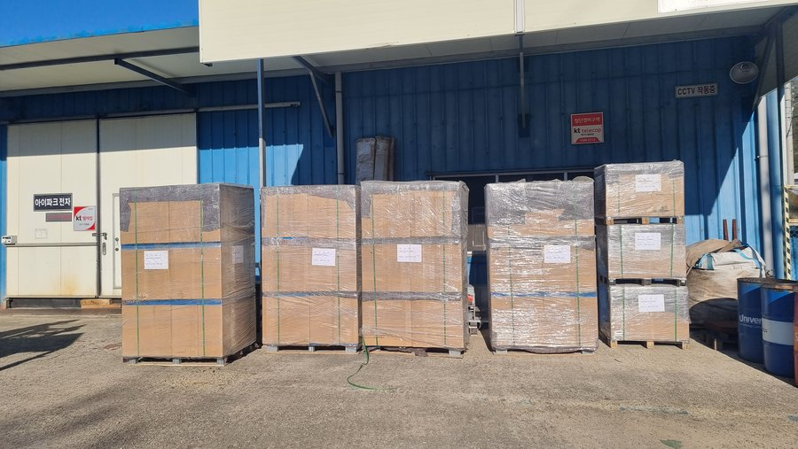
02
하역 · 검수
입고 즉시 외관·포장 상태를 확인하고 수량을 대조합니다. 이 단계에서 걸러진 건은 전시장에 올라가지 않습니다.
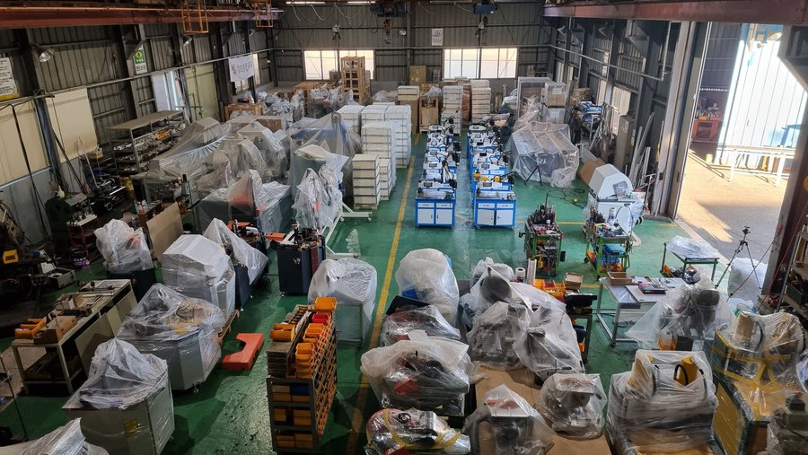
03
전시 보관
김해 전시장에 실물을 세워 둡니다. 카탈로그가 아니라 돌아가는 기계를 직접 보고 고르실 수 있습니다.
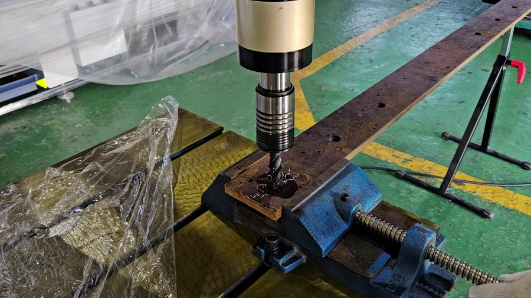
04
시연 · 테스트
구매 전 실제 소재로 탭을 내 보시고 결정하십시오. 탭 규격·소재·깊이를 지정해 주시면 그 조건 그대로 가공해 보여 드립니다.
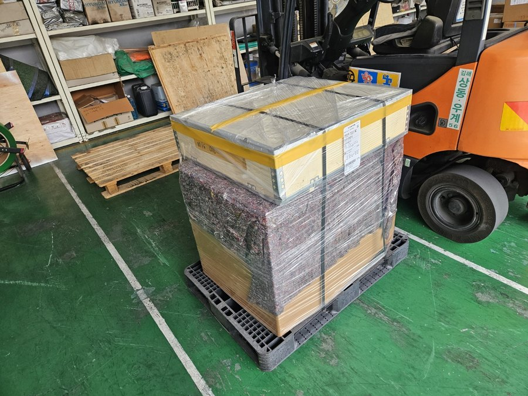
05
포장 · 출고
본체와 다이를 파손 없이 고정 포장해 출고합니다. 재고 보유 품목은 당일 출고가 가능합니다.
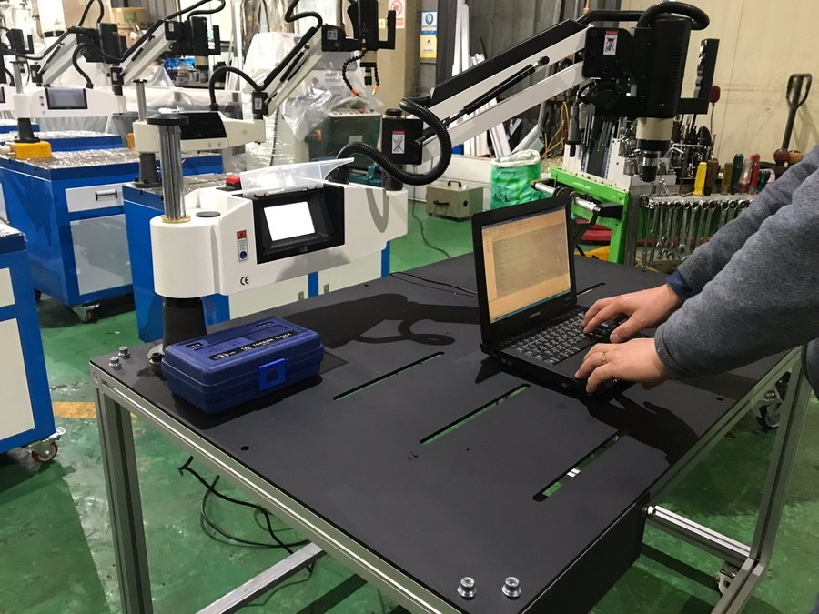
06
입고 수리
고장 시 기계를 보내 주시면 저희가 직접 수리합니다. 퓨즈·척·서보 드라이브 등 소모·수리 부품을 자체 보유합니다.
그래서 기다리실 일도, 돌아다니실 일도 없습니다.
Selection
어떤 소재를 얼마나 연속으로 가공하십니까
건식으로 충분한 작업이라면 일반형이 더 단순합니다. 분사식은 절삭 부하가 크거나 홀 수가 많은 작업에서 효과가 큽니다.
M3 ~ M12 · 소구경 — 2모델
알루미늄 프로파일 조립처럼 작은 탭을 많이 내는 작업용입니다. 소구경 탭은 부러지기 쉬워 윤활 효과가 특히 큽니다. 800 rpm 과 1,200 rpm 두 가지입니다.
M3 ~ M16 · 분사식 표준기 — 1모델
WTM-M3-M16-MO-1100E 는 600W 세 모델 가운데 탭 범위가 M16 까지로 가장 넓습니다. 25kg 경량이라 작업 위치를 옮기기 쉽고, 반경 1,100mm 면 일반적인 부재는 대부분 닿습니다.
M3 ~ M20 · 범용 — 1모델
WTM-M3-M20-MO-1200K 는 소경부터 중대형까지 한 대로 가공합니다. 탭 규격이 폭넓게 섞여 들어오는 현장이라면 이 구성이 가장 간단합니다.
M6 ~ M36 · 대구경 — 2모델
대구경일수록 발열과 칩 배출이 문제가 됩니다. M36 모델은 내장 오일 탱크에서 연속 가공 중에도 공급이 끊기지 않도록 자동 분사합니다.
일반형과 같은 것
터치스크린 · 수동/자동/연동 3모드 · 무단 변속 · 깊이 자동 역회전 · 지능형 토크 보호 — 제어 방식은 일반형과 완전히 동일합니다. 조작을 새로 익히실 필요가 없습니다.
일반형과 다른 것
오일 탱크와 분사 노즐이 헤드에 통합됩니다. 별도 쿨런트 설비가 필요 없고, 가공 신호에 맞춰 자동으로 나가므로 작업자가 따로 조작하지 않습니다.
Model Line-up
절삭유 분사식 6종 한눈에 비교
탭 범위로 먼저 좁히시고, 그다음 출력·회전수를 보십시오. 상세 치수는 모델별 페이지에서 확인하실 수 있습니다.
| # | 모델 | 탭 범위 | 작업 반경 · 출력 · 회전수 · 중량 | |
|---|---|---|---|---|
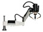 | 1 | WTM-M3-M10-MO-1100K-800RPM | M3 ~ M10 | 1,100 mm · 600 W · 최대 800 RPM · 25 kg |
| 2 | WTM-M3-M12-MO-1100K-1200RPM | M3 ~ M12 | 1,100 mm · 600 W · 최대 1,200 RPM · 25 kg | |
| 3 | WTM-M3-M16-MO-1100E | M3 ~ M16 | 1,100 mm · 600 W · 최대 375 RPM · 25 kg | |
| 4 | WTM-M6-M24-MO-1200K-200RPM | M6 ~ M24 | 1,200 mm · 1.2 kW · 최대 200 RPM · 50 kg | |
| 5 | WTM-M6-M36-MO-1200K-150RPM | M6 ~ M36 | 1,200 mm · 1.2 kW · 최대 150 RPM · 60 kg | |
| 6 | WTM-M3-M20-MO-1200K | M3 ~ M20 | 1,200 mm · 1.2 kW · 최대 200 RPM · 60 kg |
· 회전수는 무단 변속 상한값입니다. · 중량은 본체 기준입니다. · 전용 테이블·마그네틱 척·바이스(104004)와 터치스크린(104003)은 별매입니다.
Specifications
전 모델 공통 사양
모델마다 달라지는 것은 탭 범위·작업 반경·출력·회전수·중량입니다.
| 전원 | 단상 220V · 50/60Hz |
|---|---|
| 제어 방식 | 서보 모터 제어 + 디지털 터치스크린 (한글 지원) |
| 운전 모드 | 수동 · 자동 · 연동(반복) 3모드 · 무단 변속 |
| 깊이 제어 | 설정 깊이 도달 시 자동 역회전 — 블라인드 홀(막힌 구멍) 가공 대응 |
| 보호 장치 | 지능형 토크 보호 · 사이즈별 토크 리미트 척 — 과부하 시 클러치 작동 |
| 가공 자세 | 유니버설 헤드 · 360° 회전 암 — 수직·수평 자유 가공 |
| 적용 소재 | 알루미늄 · 비철 · 철 · 스테인리스 |
| 보증 · 사후 관리 | 입고 수리 — 소모·수리 부품 자체 보유 |
알루미늄비철철스테인리스
Real Product
실물 · 가공 자세 · 부속 구성
분사 노즐이 붙는 자리와 두 가지 가공 자세, 그리고 함께 쓰시는 부속입니다. 탭 콜렛 척은 기본 공급이고 테이블·바이스는 별매입니다.
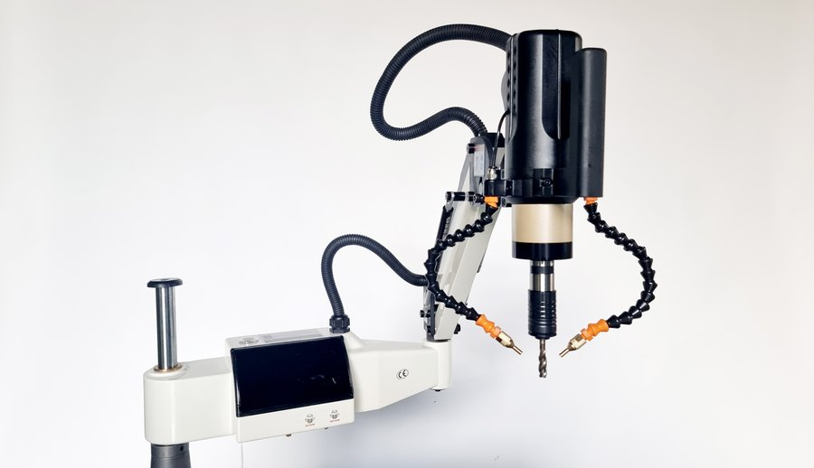
분사 헤드 — 수직 가공 자세 (노즐·탭 척·제어부)
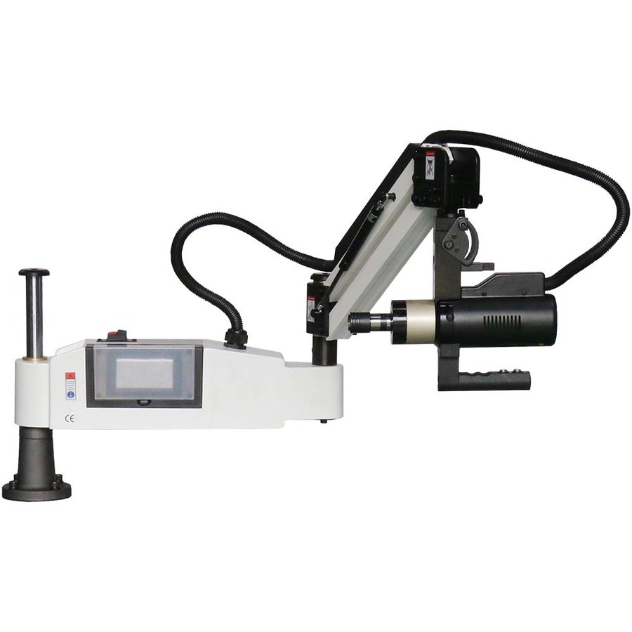
본체 — 수평 가공 자세 (유니버설 헤드 90° 회전 · 본체 구조는 일반형과 동일)
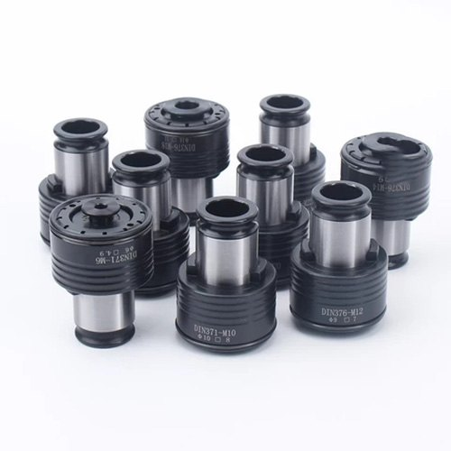
탭 콜렛 척 세트 WTM-GT12-JIS — M3~M16 9종 (104005 · 기본 공급)
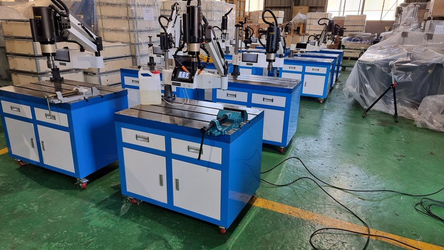
전시장 실물 — 분사식 본체 다수 전시
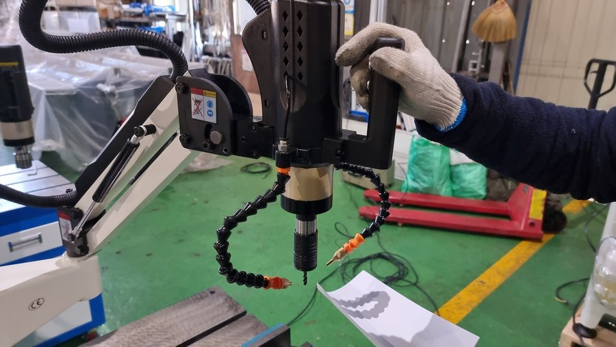
오일 분사 확인 — 실제 가공 자세
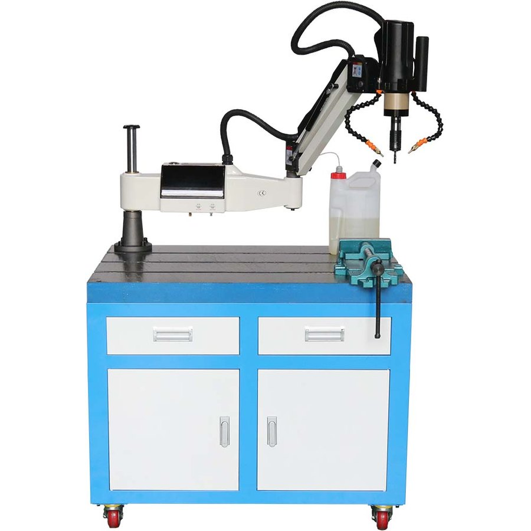
전용 테이블 + 본체 + 오일 탱크 + 바이스 (104004 · 별매)
Series Line-up
일반형과 절삭유 분사식, 두 갈래입니다
같은 서보 제어 구조에서 절삭유 공급 장치의 유무만 다릅니다. 건식으로 충분한 작업이라면 일반형이 더 단순합니다.
일반형 (Standard)
11종 · M3~M48 · 반경 1,100~1,500mm
절삭유 분사식 (MO)
6종 · M3~M36 · 오일 자동 공급
테이블 · 척 · 바이스 · 터치스크린
104002~104005 · 주철다이 세트 · 마그네틱 척 · 콜렛 척
Order & Shipping
주문 · 출고 안내
모델 선정
쓰시는 탭 규격과 공작물 크기를 알려 주시면 맞는 구간을 골라 드립니다. 여러 대 운용 계획이 있으시면 조합까지 함께 제안해 드립니다.
세트 구성
본체에 전용 테이블(주철 다이 600×900 · 서랍형 · T 슬롯), 마그네틱 척(300 / 600KG), 볼반 바이스(4 · 6인치)를 조합해 한 번에 받으실 수 있습니다. 필요한 것만 골라 구성하셔도 됩니다.
기본 공급 · 별매
탭 콜렛 척 세트(M3~M16 9종 · JIS / DIN / ISO 협의 후 출고)는 기본 공급입니다. 전용 테이블·마그네틱 척·바이스(104004)와 터치스크린(104003)은 별매입니다.
재고 · 출고
국내 재고 보유 품목은 신속 출고됩니다. 주문 전 재고 상황을 확인해 드립니다.
사전 시연
시연은 김해 전시장에서 진행합니다. 가공하실 소재를 직접 가져오셔도 됩니다. 방문 일정은 아래 채널로 미리 예약해 주십시오.
사후 관리
수리는 입고 처리합니다. 퓨즈·탭 척·서보 드라이브 등 소모·수리 부품을 자체 보유해 부품 대기 없이 처리합니다.
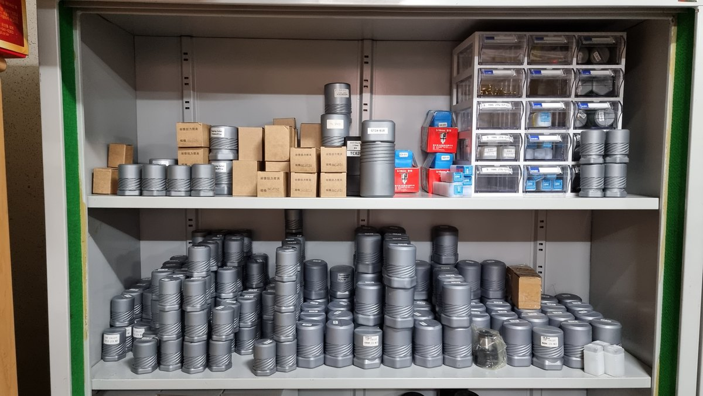
수리 · 소모 부품 상시 보유 — 퓨즈 · 탭 척 · 서보 드라이브 등을 재고로 두고 있어, 입고 수리 시 부품을 기다리지 않습니다.
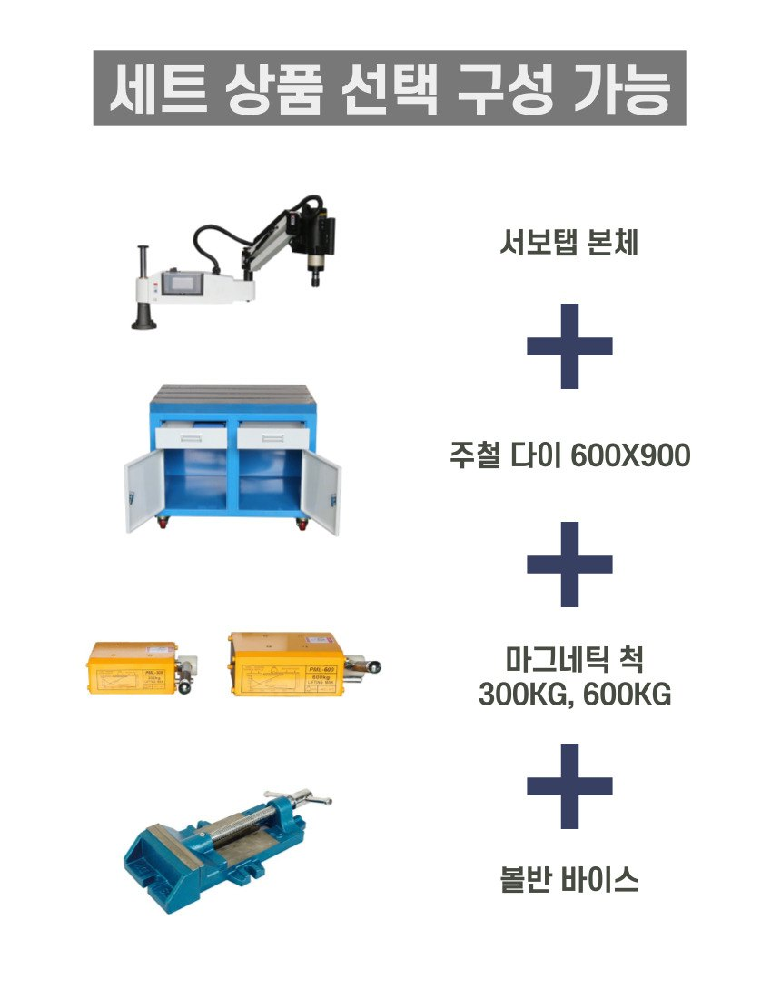
세트 상품 선택 구성 — 본체 + 주철 다이 600×900 + 마그네틱 척 300 / 600KG + 볼반 바이스. 쓰시는 조합으로 묶어 드립니다.
Channels
채널 안내
모델 선정 · 견적 문의
탭 규격과 공작물 조건만 알려 주시면 맞는 모델을 골라 드립니다.
055-327-4112 대표
010-4465-4112 휴대전화
geonics@hanmail.net 이메일